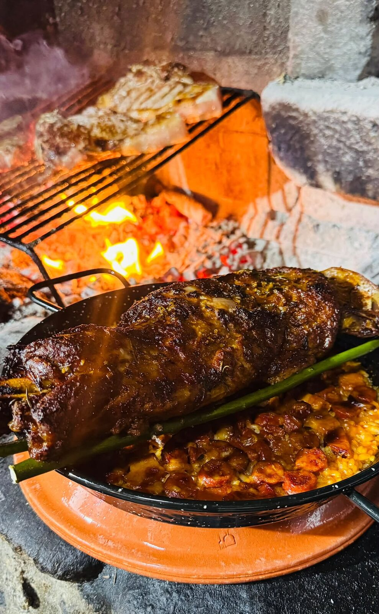
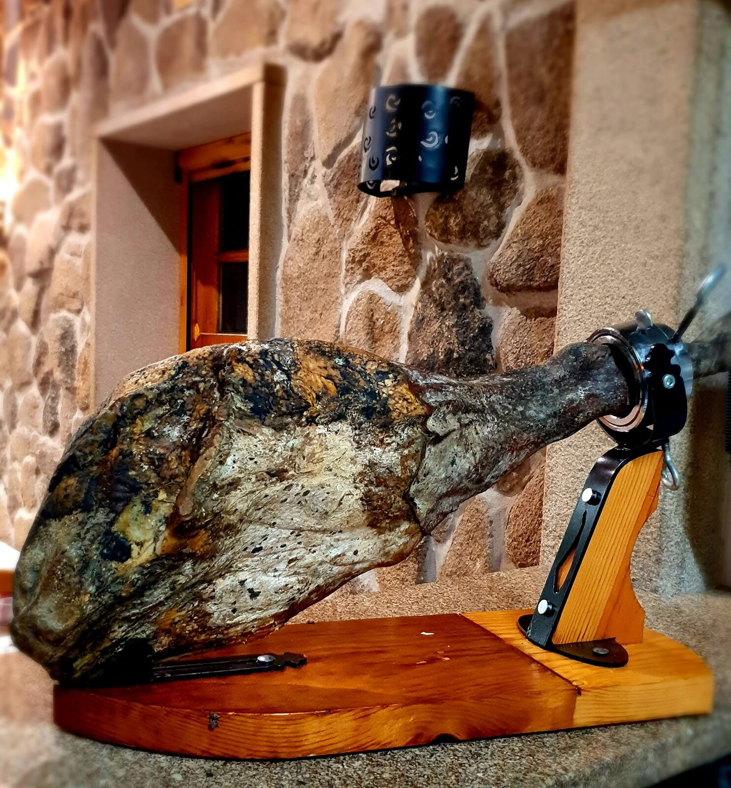

Sarzeda, Sernancelhe
Casa do Avô
Esta era a casa do avô do proprietário. Ficou fechada durante anos, foi recuperada pedra a pedra e reaberta como restaurante, sem perder o traço da construção original em granito.
A brasa está sempre acesa: postas de vitela, bacalhau e polvo, e o porco Bísaro em três formas diferentes, do presunto à alheira.


